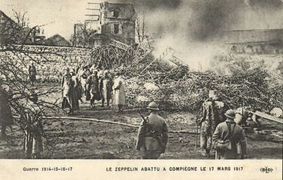
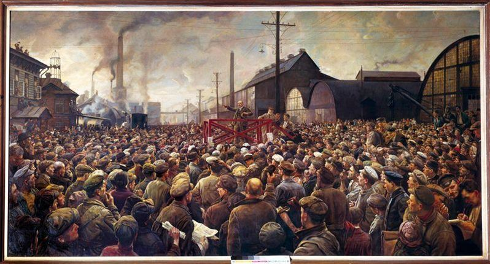

Le mois mars 1917 débute par une assez grande activité des deux artilleries sur le front de part et d'autre de l'Avre. Le froid rigoureux du mois de février est un peu moins meurtrier sur le front occidental mais les combats sur les fronts russes et roumains se déroulent toujours dans des températures extrêmes. On a enregistré 22 au-dessous de zéro et une neige abondante arrête la plupart des opérations.
Du jeudi 1er mars au dimanche 11 mars 1917
Sur les fronts belge et français
Au nord de Dixmude, les Belges ont, le 1er mars, repoussé à la grenade une patrouille allemande qui tentait de s'approcher d'un poste au cours de la nuit mais dès le lendemain matin les combats font encore plus rage et une violente lutte d’artillerie s’engage dans la région de Ramscapelle, Dixmude, Steenstraete et d’ Hetsas. Les Allemands continuent à se retirer sur l'Ancre. Les alliés anglais et belges progressent encore au nord de Miraumont de 540 mètres sur un front de 2400 mètres.
Un raid exécuté à la suite d'une émission de gaz, au sud de Souchez, permet aux Alliés de faire un certain nombre de prisonniers. Un de leurs détachements pénètre dans les tranchées allemandes, au nord-est de Givenchy et la Bassée et ramène 9 prisonniers. Des détachements ennemis parviennent à la faveur d'un violent bombardement, à atteindre les positions britanniques vers Ablaincourt et Haucourt. Toutefois i1s en sont rejetés par d’efficaces contre-attaques.
Le samedi 3 mars, l’artillerie française bombarde avec succès 1es organisations ennemies au nord de l'Aisne et sur la rive gauche de la Meuse. Le lendemain, la lutte d’artillerie reste vive entre Oise et Aisne dans la région sud de Nouvron et en Alsace dans le secteur de Burnhaupt. Ces pilonnages intensifs permettent, dès le 5 mars, à plusieurs détachements français de pénétrer les positions adverses au sud de Nouvron et d’y opérer d’importantes destructions jusqu’aux deuxièmes tranchées allemandes. A l'est de la Meuse, la lutte d'artillerie est également violente dans le secteur du bois des Caurières. Une attaque allemande, consécutive au bombardement intense signalé dans la région, au nord d'Eix, est déclenchée sur les positions françaises de la Fieveterie. Les Allemands, qui avaient réussi à pénétrer dans les premiers éléments alliés, en sont complètement rejetés par les feux et les contre-attaques alliées.
Le mardi 6 mars, sur la rive droite de la Meuse, le bombardement dirigé par l'ennemi sur la région du bois des Caurières redouble d'intensité et est suivi d'une violente attaque sur un front de 3 kilomètres, entre la ferme des Chambrettes et Bezonvaux. Le lendemain, la lutte se poursuit au nord du bois des Caurières. Les Allemands tentent alors de chasser de nouveau des éléments de tranchée reconquis par les troupes françaises mais toutes leurs tentatives sont brisées par les contre-attaques françaises.
En Champagne le 9 mars, après une intense préparation d'artillerie, les troupes françaises réussissent à enlever la majeure partie du saillant occupé par l'ennemi depuis le 15 février, entre la Butte-du-Mesnil et Maisons-de-Champagne, faisant 100 prisonniers dont 2 officiers.
Sur les fronts russe et roumain
Le 2 mars, les Russes reprennent une partie des positions qu'ils avaient perdues sur la chaussée Jacobeni-Kampolung mais dès le lendemain, ils reperdent une partie des terrains si courageusement gagnés la veille.
Alliés aux Anglais, les Russes poursuivent leur avancée vers Bagdad ; les Turcs se fortifient de plus en plus dans toute la région; ils font venir des secours de Constantinople, mais ils ont dû abandonner le col de Saïd-Abbad qui semblait imprenable A l'altitude de 2000 mètres. Bagdad est pris : cette chute ne peut manquer d'avoir un effet considérable sur les populations musulmanes. La légation de Russie informe alors le président du Conseil de Perse que les troupes russes occupent plusieurs villes, et il a invité le gouvernement persan à reprendre possession de ces villes, dont l’évacuation des troupes ennemies est en cours.
Le 8 mars, les Russes poussent assez loin en avant d'Hamadan, en Perse. Ils s’emparent du col d'Asade-Abad.
Les Russes, dans la région d'Olay, infligent, le 10 mars, un échec aux Allemands.
En Russie, en présence du problème de l'approvisionnement, la Douma vote l'extension des pouvoirs des municipalités pour la durée de la guerre.
Du lundi 12 mars au dimanche 18 mars 1917
Sur les fronts belge et français
Deux faits dominent la situation militaire sur le front français :
l° la prise du bois de Saint-Pierre-Vaast, de Bapaume et de Péronne pour les Anglais (ce bois était une des principales positions allemandes qui contenaient l'avance britannique à l'est de la route de Béthune; quant à l'entrée victorieuse de nos alliés à Bapaume et à Péronne, elle prive l'ennemi d'un centre important de ravitaillement) ;
2° l'avance magnifique des troupes françaises sur l'Avre : nos coups de sonde exécutés entre l'Aisne et l'Oise se récapitulent cette semaine par un gain de 80 kilomètres carrés. L'ennemi est en retraite sur la route de Cambrai, et Noyon, bifurcation importante, est entre nos mains.
Dans la région de Nouvron, au nord de l'Aisne, grande activité des deux artilleries. Le lundi 12 mars, une tentative de coup de main sur un saillant des lignes françaises, au nord-ouest de Reims, est stoppée net par les feux français et coûte des pertes importantes à l'ennemi.
Sur la rive droite de la Meuse, une autre tentative de l'ennemi dans la région de Bezonvaux échoue complètement. Sur la rive gauche, l’artillerie française exécute des tirs de destruction sur les organisations allemandes du secteur de Forges. Mais des canonnades intermittentes ont également lieu sur le reste du front, plus vives dans les secteurs de Maisons-de-Champagne et de Navarin et précèdent les assauts alliés réalisés dès le lendemain. Sur un front de 1500 mètres, les troupes françaises enlèvent toutes les tranchées de l'ennemi, conquièrent la croupe 185 et pénètrent dans un ouvrage fortifié sur les pentes nord de ce mamelon. Au cours de cette action, ils feront une centaine de prisonniers.
Le 14 mars, les Allemands font sans succès des tentatives à la grenade contre la cote 185, que les troupes françaises continuent à tenir.
Le lendemain, malgré un violent bombardement de l'ennemi qui a fait usage d'obus lacrymogènes, les troupes françaises continuent de progresser à la grenade dans la région de Maisons-de-Champagne. Ils enlèvent ainsi plusieurs boyaux ennemis.
Vendredi 16 mars, les troupes françaises poussent, vers Beuvraignes et au sud de Crapeaumesnil, jusqu'à la troisième tranchée allemande.
Le samedi 17 mars, de part et d'autre de l'Avre, les détachements français continuent à progresser au cours de la journée sur divers points du front ennemi, depuis Andechy jusqu'au sud de Lassigny. Durant cette même journée, une action d'artillerie assez violente a lieu entre Soissons et Reims dans la région de Berry-au-Bac.
En Russie et sur les fronts russes
En Russie, un mouvement révolutionnaire, analogue au mouvement français de 1789, a balayé l'ancien régime : la Révolution russe, libérale et nationale, va organiser « l'ordre » nouveau. Le mauvais ravitaillement des troupes et de la population civile ; les intrigues de Cour suggérées par la tsarine, princesse d’origine allemande ; les tergiversations du tsar, mal conseillé par les ministres autocrates couvrant les erreurs et les trahisons de la bureaucratie, ont amené la Douma, les troupes et les grands-ducs à demander l'abdication du tsar.
Celui-ci adresse un manifeste au peuple russe : « D'accord avec la Douma d'Empire, dit-il en substance, nous avons reconnu pour bien d'abdiquer la couronne de l'Etat et de déposer le pouvoir suprême. Ne voulant pas nous séparer de notre fils aimé, nous léguons notre héritage à notre frère, le grand-duc Michel Alexandrovitch, le bénissant de son avènement au trône de l'Etat russe. Nous léguons à notre frère de gouverner en pleine union avec les représentants de la nation, siégeant aux institutions législatives et de leur prêter serment inviolable au nom de la patrie. »
Le nouveau tsar lance la proclamation suivante :
« A une époque de guerre sans précédent et de troubles populaires, animé, avec tout le peuple, de la pensée que le bien de la patrie prime tout, j'ai pris la ferme résolution d'accepter le pouvoir suprême seulement si telle est la volonté de notre grand peuple qui doit par un plébiscite, par l'organe de ses représentants réunis dans une Assemblée constituante, établir la forme du gouvernement et les nouvelles lois fondamentales de l'Etat russe. Je prie tous les citoyens de Russie de se soumettre au gouvernement provisoire formé sur l'initiative de la Douma et investi de toute la plénitude du pouvoir, jusqu'à ce que, dans un délai aussi bref que possible, une Assemblée constituante, élue sur la base du suffrage direct, égal et secret, ait, par sa décision relative à la forme du gouvernement, exprimé la volonté du peuple. »
Le grand-duc Nicolas devient généralissime : La nouvelle du mouvement révolutionnaire, connue de toutes les troupes sur le front russe, a provoqué des cris d'enthousiasme et des chants patriotiques.
Les principales villes et provinces de l'Empire adhèrent à la Révolution et le nouveau gouvernement, présidé par le prince Lvov, a fait cette déclaration qui satisfait le peuple russe et les peuples alliés : « La Russie, victime d'une agression préméditée et préparée de longue date, continuera, comme par le passé, à lutter contre l'esprit de conquêtes d'une race de proie qui s'imagine pouvoir établir, au-dessus de ses voisins, une hégémonie intolérable et faire subir à l'Europe du XXème siècle la honte de la domination du militarisme prussien. »
Au front, les Russes continuent à progresser, en Perse, d'Hamadan vers Ramanchah. Mais des troupes russes progressent et commencent à pénétrer en Arménie, ce qui oblige la Turquie à retirer ces troupes sur le front roumain pour renforcer ses frontières.
Le 16 mars en Perse, les Russes occupent Kermanschah.
Du lundi 19 mars au dimanche 25 mars 1917
Sur les fronts belge et français
Les combats de cette semaine ont rendu très difficile la situation des Allemands dans Saint-Quentin et dans La Fère : les Anglais se sont emparés de Roisel, le dernier chef-lieu de canton que tenait l'ennemi dans la Somme, et, de ce fait, le chemin de fer de Cambrai-Saint-Quentin n'est plus protégé par la moindre position naturelle; les Français ont progressé au-delà de la ligne Saint-Quentin-Laon par La Fère. En résumé, la nouvelle ligne défensive allemande, appelée le « fossé d'Hindenburg », se trouve sérieusement entamée.
La progression des troupes françaises a continué sur un front de 60 kilomètres, de l'Avre à l'Aisne. Au nord de l'Avre le 19 mars, la cavalerie française entre dans Nesle, au nord-est de Lassigny, et avance de 20 kilomètres vers Ham. Dès le lendemain, les troupes dépassent Ham, sur la Somme, et Chauny, sur l’Oise. Les Français tiennent la plupart des localités entre ces deux villes.
Le 22 mars, à l'est de Ham, les troupes françaises forcent en deux endroits le canal de la Somme, malgré une vive résistance des Allemands. L'opération, conduite avec vigueur, permet aux Français de dégager les rives nord et est du canal et de refouler l'ennemi jusqu'aux lisières de Clastres et de Montescourt.
Sur le front Clastres-Montescourt, les attaques successives de l'ennemi ont été brisées par nos feux de mitrailleuses qui ont infligé de fortes pertes aux Allemands. Des combats également vifs dans la région à l'ouest de la Fère se sont terminés par l'échec complet de l'ennemi.
En Russie et sur les fronts russes
En Russie, la révolution, canalisée par la Douma, continue à éviter toute effusion de sang : la Douma tient tête aux « extrémistes ». Le tzar et la tzarine ont été arrêtés et enfermés séparément : des lettres très compromettantes de la tzarine à l'Allemagne sont entre les mains du nouveau gouvernement. Le grand-duc Nicolas a été informé par le ministre de la Guerre que ses relations avec la dynastie rendaient indésirable son maintien au commandement en chef : le général Alexeieff, qui était, en fait, à la tête des armées depuis l'automne 1915, devient généralissime. Les généraux des principales armées ont prêté le serment de fidélité au gouvernement provisoire. Les grands-ducs adhèrent, d'ailleurs, au mouvement littéral.
Le 22 mars, une tentative de meurtre est commise par un officier contre le ministre de la Justice russe, M. Kerensky.
Sur le front russe proprement dit, fusillades et reconnaissances d'éclaireurs, sans grande importance. Néanmoins les Russes prennent Kerind, sur la route de Kermanchah à Klanikin.
Depuis l'occupation de Kasrichirine par les Russes et de Bakula (à 120 kilomètres de Kasrichirine) par les Anglais, les forces alliées marchent rapidement à la rencontre l'une de l'autre, en suivant le cours de la Dialah. Le 23 mars marque le combat sur le front russe le long de la Berezina et l’échec d'une attaque ennemie au nord-ouest de Brody.
Du lundi 26 mars au samedi 31 mars 1917
Sur les fronts belge et français
L'artillerie belge continue à exécuter des tirs efficaces sur les organisations allemandes ; à Dixmude et à Hetsas, la lutte de tranchées est particulièrement vive.
Cette semaine, le mouvement convergent vers Cambrai et l'encerclement de Saint-Quentin, par les troupes anglaises et françaises, se dessinent de plus en plus nettement.
Malgré une très vive résistance des Allemands, nos soldats progressent à l'ouest de Maisons-de-Champagne ; la situation sur ce point est bien établie : toutes les contre-attaques sont brisées par les feux français.
Le 27 mars, entre Somme et Oise, les Allemands renouvellent à plusieurs reprises leurs attaques sur le front Essigny-Benay. Toutes ces tentatives sont repoussées par les feux ou par les contre-attaques françaises et des pertes sérieuses sont infligées à l'ennemi. A contrario, au sud de l'Oise, nos troupes poursuivent leur progression. Au cours d'une brillante opération, elles enlèvent, le 28 mars, Coucy-le-Château, puis toute la basse forêt de Coucy, ainsi que les villages de Petit-Parisis, de Verneuil, de Coucy-la-Ville.
Malgré le temps défavorable, nos pilotes ont livré, au cours de la semaine, de nombreux combats aériens, et détruit sept appareils allemands. Les avions ennemis ont lancé quelques bombes sur Dunkerque, et des torpilleurs ont tiré sur cette ville une soixantaine de projectiles : les dégâts sont insignifiants. Pourtant, le 27 mars, une escadrille de bombardement française lance une tonne de projectiles sur les usines de Thionville et le bassin de Briey, ainsi que sur les gares de Conflans et de Montmédy. Les pertes françaises ont été légères dans l’ensemble. Au nord de Soissons, ils enlèvent une ferme au nord-ouest de Margival, puis réalisent des progrès au-delà de Neuville-sur-Margival et de Leuilly.
Entre Somme et Oise, grande activité des deux artilleries le 29 mars, notamment sur le front Essigny-Benay mais aucune action d'infanterie. Le lendemain, la journée est relativement calme, bien que l’artillerie demeure active dans le secteur de Margival.
A l'ouest de Maisons-de-Champagne, une vive attaque de des troupes françaises, le 31 mars, permet de rejeter l'ennemi des éléments de tranchées où il avait pris pied le 28 mars. Au cours de cette action, il est fait 63 prisonniers.
En Russie et sur les fronts russes
En Russie, la révolution continue à progresser: les chefs des missions militaires alliées détachées auprès du grand quartier général russe ont télégraphié au généralissime russe qu'ils avaient l'espoir que la victoire soit proche. Le grand-duc Nicolas est surveillé et la grande-duchesse Marie Pavolna et son entourage ont été arrêtés.
Fusillades et reconnaissances d'éclaireurs : les attaques allemandes demeurent, durant cette semaine, assez faibles. L'artillerie russe a bombardé avec succès les monitors allemands qui tentaient de s'approcher de Galatz.
Le 26 mars, les troupes russes accentuent leur marche de la frontière persane vers Bagdad. Dès le lendemain, elles pénètrent en Asie Mineure, dans le vilayet de Mossoul.
Les troupes russes se trouvent contraintes de reculer sur la Chava au sud-est de Baranovitchi, le 28 mars.
Le 31 mars, les Russes infligent un échec à l'ennemi au nord de Stanislau, en Galicie. Ils les repoussent également au sud-ouest de Brzezany, en Arménie, dans la direction de Bitlis et attaquent les Turcs à Tachkpal.
Partager cette page